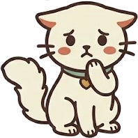

Salud
Cómo saber si tu gato tiene dolor: 9 señales que esconde
Las señales en la cara, el cuerpo y la rutina que lo delatan, y cuándo ir al veterinario sin esperar.
Todo lo que conviene saber para cuidar a tu gato, explicado claro y sin rodeos.
¿Quieres recibir una carta con consejos cada semana? Únete gratis al club